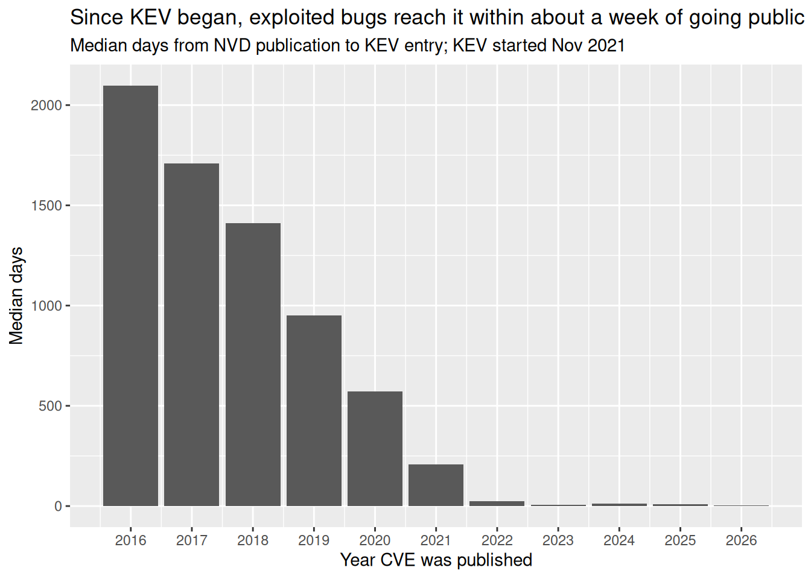

Rows: 1758 Columns: 12
── Column specification ────────────────────────────────────────────────────────
Delimiter: ","
chr (10): cveID, vendorProject, product, vulnerabilityName, shortDescriptio...
date (2): dateAdded, dueDate
ℹ Use `spec()` to retrieve the full column specification for this data.
ℹ Specify the column types or set `show_col_types = FALSE` to quiet this message.
No values are missing in the columns used below. Only cwes has gaps: 175 of 1,758 entries (10%)
summary(kev)
cveID vendorProject product vulnerabilityName
Length:1758 Length:1758 Length:1758 Length:1758
Class :character Class :character Class :character Class :character
Mode :character Mode :character Mode :character Mode :character
dateAdded shortDescription requiredAction
Min. :2021-11-03 Length:1758 Length:1758
1st Qu.:2022-03-03 Class :character Class :character
Median :2023-02-14 Mode :character Mode :character
Mean :2023-09-06
3rd Qu.:2025-04-09
Max. :2026-10-26
dueDate knownRansomwareCampaignUse forensicTriage
Min. :2021-11-17 Length:1758 Length:1758
1st Qu.:2022-05-03 Class :character Class :character
Median :2023-03-07 Mode :character Mode :character
Mean :2023-10-17
3rd Qu.:2025-04-30
Max. :2026-11-03
notes cwes
Length:1758 Length:1758
Class :character Class :character
Mode :character Mode :character
kev |>count(knownRansomwareCampaignUse)
# A tibble: 2 × 2
knownRansomwareCampaignUse n
<chr> <int>
1 Known 361
2 Unknown 1397
361 of 1,758 KEV entries (20.5%) are known to have been used in ransomware campaigns. The rest are marked “Unknown”, which means no confirmed evidence, not that they were never used.
2. Entries added per year
kev |>count(year =year(dateAdded))
# A tibble: 6 × 2
year n
<dbl> <int>
1 2021 311
2 2022 555
3 2023 187
4 2024 186
5 2025 245
6 2026 274
KEV launched in November 2021 with 311 entries in its first two months, peaked at 555 in 2022, then settled near 190 a year in 2023-24. Additions are rising again: 2026 already has 274 by 26 October, more than all of 2025 (245).
kev |>count(year =year(dateAdded)) |>ggplot(aes(x = year, y = n)) +geom_col() +scale_x_continuous(breaks =2021:2026) +labs(title ="KEV additions peaked in 2022, dipped and are rising again",subtitle ="2026 is up to 26 October",x =NULL, y ="CVEs added to KEV")
# A tibble: 15 × 2
vendorProject n
<chr> <int>
1 Microsoft 390
2 Cisco 101
3 Apple 95
4 Adobe 82
5 Google 75
6 Oracle 46
7 Apache 41
8 Ivanti 36
9 Fortinet 32
10 Linux 31
11 Citrix 27
12 D-Link 26
13 VMware 26
14 SonicWall 19
15 Synacor 19
Microsoft products account for the most KEV entries: 390 out of 1,758 (22%), more than Cisco, Apple and Adobe combined (278)
sum(top15$n)
[1] 1046
round(100*sum(top15$n) /nrow(kev), 1)
[1] 59.5
Top 15 vendors make up 1,046 out of 1,758 entries (59.5%)
top15 |>ggplot(aes(x = n, y =fct_reorder(vendorProject, n))) +geom_col() +labs(title ="15 out of 291 vendors make up over half of the total entries (59.5%)",x ="CVEs in KEV", y =NULL)
ttx |>group_by(pub_year) |>summarise(median_days =median(days)) |>ggplot(aes(x = pub_year, y = median_days)) +geom_col() +scale_x_continuous(breaks =2016:2026) +labs(title ="Since KEV began, exploited bugs reach it within about a week of going public",subtitle ="Median days from NVD publication to KEV entry; KEV started Nov 2021",x ="Year CVE was published", y ="Median days")

For CVEs published since 2022, the median gap between NVD publication and KEV entry is between 4 and 24 days, usually about a week. Older CVEs show gaps of years only because KEV started in November 2021, so bugs exploited before then were added late. 65 CVEs have negative gaps because NVD published its record after CISA had already listed them. 2026 is a partial year, so its gaps cannot be long yet.
Findings
KEV lists 1,758 exploited CVEs from 291 vendors. Only cwes has gaps: 175 entries (10%).
361 of 1,758 entries (20.5%) are known to have been used in ransomware campaigns.
KEV started with 311 entries in its first two months (Nov-Dec 2021), peaked at 555 in 2022, settled near 190 a year in 2023-24, and is rising again: 274 in 2026 by 26 October, more than all of 2025 (245).
Microsoft has the most entries, 390 of 1,758 (22%), more than Cisco, Apple and Adobe combined (278).
The top 15 vendors make up 1,046 of 1,758 entries (59.5%).
For CVEs published since 2022, the median gap between NVD publication and KEV entry is 7 days (between 4 and 24 days depending on the year), so attackers move within about a week. 65 CVEs have negative gaps because NVD published its record after CISA had listed them.